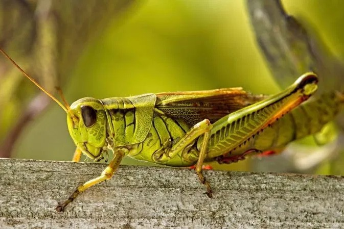
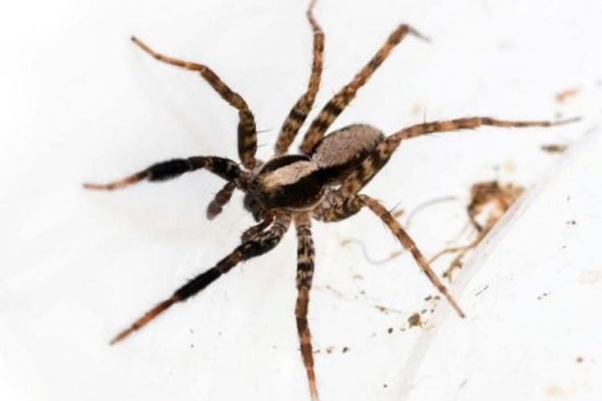
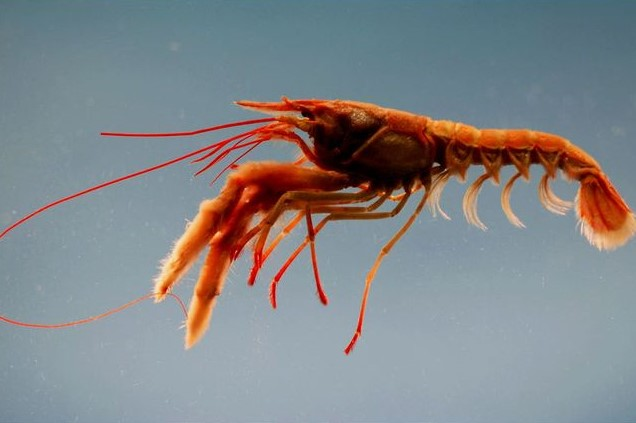
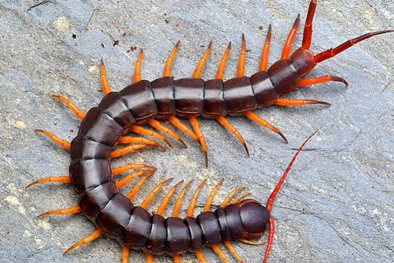

| Hewan | Ciri-ciri | Gambar | ||||
|---|---|---|---|---|---|---|
| Belalang | Kelas | Habitat | Bagian Tubuh | Jumlah Kaki | Alat Pernapasan |  |
| Insecta | Darat dan air (kecuali laut) | Kepala, thorax, abdomen | 6 | Trakea | ||
| Laba-laba | Kelas | Habitat | Bagian Tubuh | Jumlah Kaki | Alat Pernapasan |  |
| Arachnida | Pepohonan | Cephalothorax, abdomen | 8 | Paru-paru buku | ||
| Udang | Kelas | Habitat | Bagian Tubuh | Jumlah Kaki | Alat Pernapasan |  |
| Crustacea | Laut, air tawar | Cephalothorax, abdomen | 22 | Insang | ||
| Lipan | Kelas | Habitat | Bagian Tubuh | Jumlah Kaki | Alat Pernapasan |  |
| Myriapoda | Tempat yang bau dan jorok | Cepha | 2 kaki tiap buku | Trakea | ||